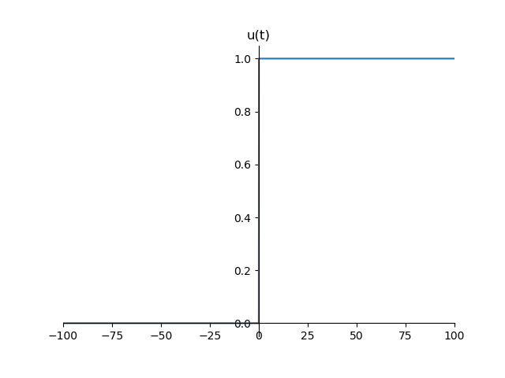
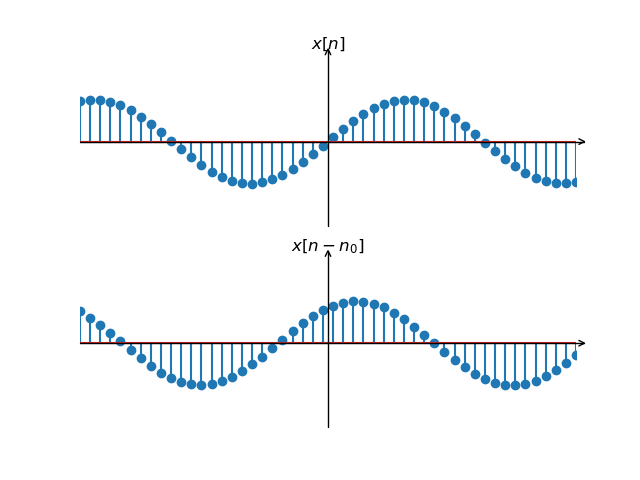
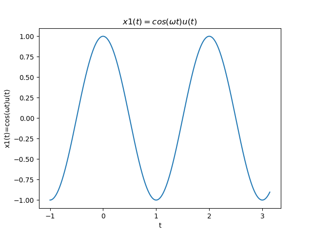
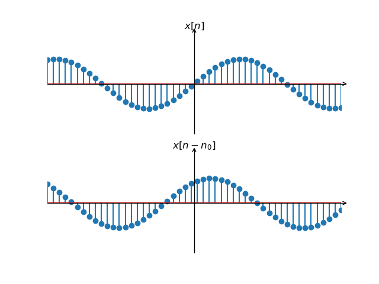
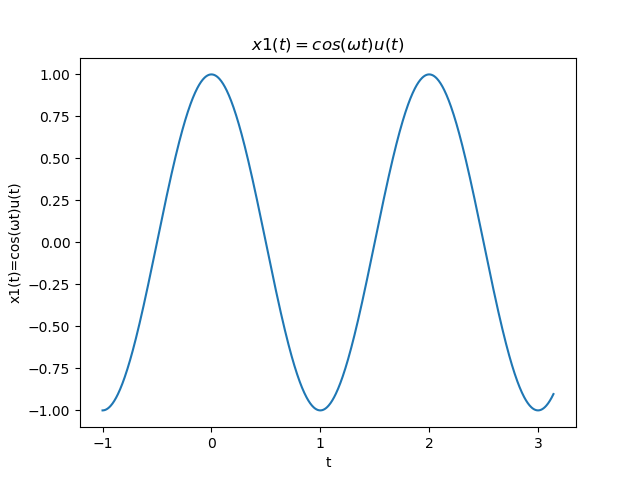

浙江大学宁波理工学院
信号与系统大作业汇报页面
- 任课老师:王一刚
- 小组成员:
- 吕成浩（Python制作兼组长
- 郁梦龙（Markdown制作)
- 王晓平（论文）
import matplotlib.pyplot as plt
import numpy as np
x0=-1
x1=np.pi
ω=np.pi
t0=1
#ω=π x1(t)=sin(ωt)u(t)
x=np.linspace(x0,x1,1000)
k=np.linspace(x0,x1,1000)
y=np.cos(ω*x)
plt.figure('函数图像')
plt.title("$x1(t)=cos(ωt)u(t)$")
plt.plot(x,y)
plt.xlabel('t')
plt.ylabel('x1(t)=cos(ωt)u(t)')
# gca ='get current axis'
ax = plt.gca()
import numpy as np
import matplotlib.pyplot as plt
import mpl_toolkits.axisartist as axisartist
import matplotlib.ticker as ticker
x=np.linspace(-5,5,50)
y1=np.sin(x)
y2=np.sin(x+1)
fig=plt.figure()
ax=axisartist.Subplot(fig,211)
fig.add_axes(ax)
ax.axis[:].set_visible(False)
ax.axis["x"] = ax.new_floating_axis(0,0)
ax.axis["x"].set_axisline_style("->",size=1.0)
ax.axis["y"] = ax.new_floating_axis(1,0)
ax.axis["y"].set_axisline_style("->",size=1.0)
ax.axis["y"].set_axis_direction("left")
ax.xaxis.set_major_locator(ticker.NullLocator())
ax.yaxis.set_major_locator(ticker.NullLocator())
ax.set_xlim(-5,5)
ax.set_ylim(-2,2)
plt.title('$x[n]$')
plt.stem(x,y1)
ax=axisartist.Subplot(fig,212)
fig.add_axes(ax)
ax.axis[:].set_visible(False)
ax.axis["x"] = ax.new_floating_axis(0,0)
ax.axis["x"].set_axisline_style("->",size=1.0)
ax.axis["y"] = ax.new_floating_axis(1,0)
ax.axis["y"].set_axisline_style("->",size=1.0)
ax.axis["y"].set_axis_direction("left")
ax.xaxis.set_major_locator(ticker.NullLocator())
ax.yaxis.set_major_locator(ticker.NullLocator())
ax.set_xlim(-5,5)
ax.set_ylim(-2,2)
plt.title(r'$x[n-n_0]$')
plt.stem(x,y2)
import matplotlib.pyplot as plt
import numpy as np
import math
a1=-1
x=np.linspace(-5,5,50)
y1=np.exp(a1*x)
a2=+1
x=np.linspace(-5,5,50)
y2=np.exp(a2*x)
a3=0
x=np.linspace(-5,5,50)
y3=np.exp(a3*x)
plt.figure('指数信号')
plt.plot(x,y1)
plt.plot(x,y2)
plt.plot(x,y3)
import matplotlib.pyplot as plt
import numpy as np
def u(t,t0):
n = 0
for i in t:
if(i< t0):
t[n] = 0
n += 1
else:
t[n] = 1
n += 1
return t
x = np.linspace(-100,100,3000)
ax = plt.gca()
ax.spines['right'].set_color('none')
ax.spines['top'].set_color('none')
ax.xaxis.set_ticks_position('bottom')
ax.yaxis.set_ticks_position('left')
ax.spines['bottom'].set_position(('data', 0))
ax.spines['left'].set_position(('data', 0))
plt.xlim(-100,100)
y = u(x, 0)
x = np.linspace(-100,100,3000)
plt.title("u(t)")
plt.plot(x, y)
plt.show()
图像
.png) 


